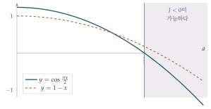

STEP III 2014, 문제 4
계속 읽기 전에 문제를 먼저 읽어 보자. 문제는 STEP Support Programme의 문제 데이터베이스에 있다: step.maths.org/questions/14-s3-q4
도입
학교에서 다루는 최적화(optimisation) 문제는 대부분 가장 좋은 수를 묻는다. 예를 들어 넓이를 최대로 만드는 \(x\)의 값을 구하는 식이다. 반면 변분법(calculus of variations)은 가장 좋은 함수를 묻는다. 두 점 사이에서 구슬이 가장 빨리 미끄러져 내려가는 곡선은 무엇인가? 매달린 사슬은 어떤 모양이 되는가? 빛은 렌즈를 지날 때 어떤 경로를 따르는가? 어느 경우든 최적화할 양은 적분이고, 미지수는 함수 전체이다.
이 문제는 그중 가장 단순하면서도 흥미로운 예를 다룬다. 적분 \(J = \int_0^1 \bigl((y')^2 - a^2y^2\bigr)\,\mathrm{d}x\)에서는 서로 경쟁하는 두 항이 균형을 이룬다. 가파름은 값을 끌어올리고, 크기는 값을 끌어내린다. \(a\)가 작으면 언제나 가파름이 이겨서 모든 함수에 대해 \(J \geq 0\)이다. 그러나 균형이 뒤집히는 임계값 \(a\)가 존재하고, 이 문제는 그 값을 정확히 구한다. 바로 \(a = \frac\pi2\)이다. \(\pi\)가 어디에서 나오는지가 이 절의 이야기이다.
시작하기 전에
\(I \geq 0\)이 왜 자명하지 않은가? \(y(1) = 0\)을 만족하는 \(y = 1 - x\)를 넣어 보자.
\(I\)는 두 양수의 차이므로 부호가 어느 쪽이든 될 수 있다. \(y = 1 - x\)이면 \(\int_0^1 1\,\mathrm{d}x = 1\)이고 \(\int_0^1 (1-x)^2\,\mathrm{d}x = \frac13\)이므로 \(I = \frac23 > 0\)이다. 그러나 더 영리하게 고른 함수라면 \(\int (y')^2\)에 비해 \(\int y^2\)을 더 크게 만들 수도 있다. 이 문제의 요령은 \(I\)를 제곱의 적분으로 쓰는 것이며, 제곱의 적분은 당연히 음이 아니다. 이것은 적분에서의 “완전제곱식 만들기(completing the square)”이다.
차근차근 풀기
단계 1 완전제곱식 만들기
\(I_1\)의 제곱을 전개하면 \[I_1 = \int_0^1 \bigl((y')^2 + 2yy'\tan x + y^2\tan^2 x\bigr)\,\mathrm{d}x,\] 이므로 \[I - I_1 = -\int_0^1 \bigl(y^2 + y^2\tan^2 x + 2yy'\tan x\bigr)\,\mathrm{d}x = -\int_0^1 \bigl(y^2\sec^2 x + 2yy'\tan x\bigr)\,\mathrm{d}x.\]
피적분함수(integrand) \(y^2\sec^2 x + 2yy'\tan x\)는 어떤 함수의 도함수(exact derivative)이다. 무엇의 도함수인가?
곱의 미분법(product rule)에 따라 \(\dfrac{\mathrm{d}}{\mathrm{d}x}\bigl(y^2\tan x\bigr) = 2yy'\tan x + y^2\sec^2 x\)이다. 따라서 \[I - I_1 = -\Bigl[y^2\tan x\Bigr]_0^1 = -\bigl(y(1)^2\tan 1 - y(0)^2\tan 0\bigr) = 0,\] 이다. \(y(1) = 0\)이고 \(\tan 0 = 0\)이기 때문이다. 그러므로 \(I = I_1 \geq 0\)이다. 제곱의 적분이기 때문이다.■
단계 2 \(I = 0\)은 언제인가?
음이 아닌 연속함수의 적분이 \(0\)이면 그 함수에 대해 무엇을 말할 수 있는가? 그렇다면 \(I = 0\)일 때 \(y\)는 어떤 방정식을 만족해야 하는가?
적분이 \(0\)인 음이 아닌 연속함수는 항등적으로 \(0\)이어야 한다(어느 한 점에서 양수라면 그 점 근처의 작은 구간에서도 양수가 되어 적분에 양의 값을 보태기 때문이다). 따라서 \(I = 0\)이면 \([0, 1]\)에서 \(y' + y\tan x = 0\)이어야 한다. 양변에 \(\sec x\)를 곱하면 이 식은 \(\frac{\mathrm{d}}{\mathrm{d}x}\left(\frac{y}{\cos x}\right) = \frac{y'\cos x + y\sin x}{\cos^2 x} = 0\)을 뜻하므로 \(y = C\cos x\)이다. 그러면 \(y(1) = C\cos 1 = 0\)이고, \(\cos 1 \neq 0\)이므로 \(C = 0\)이다. 따라서 \(I = 0\)인 것은 \(y \equiv 0\)일 때뿐이다.■
단계 3 일반적인 경우
\(\int_0^1 (y' + ay\tan bx)^2\,\mathrm{d}x\)로 1단계를 되풀이해 보자. 남는 항들이 어떤 함수의 도함수가 되려면 \(b\)는 무엇이어야 하는가?
이 적분을 \(K\)라 하자. 그러면 \[\begin{aligned} J - K &= -\int_0^1 \bigl(a^2y^2 + a^2y^2\tan^2 bx + 2ayy'\tan bx\bigr)\,\mathrm{d}x \\ &= -\int_0^1 \bigl(a^2y^2\sec^2 bx + 2ayy'\tan bx\bigr)\,\mathrm{d}x. \end{aligned}\] 한편 \(\frac{\mathrm{d}}{\mathrm{d}x}\bigl(ay^2\tan bx\bigr) = 2ayy'\tan bx + ab\,y^2\sec^2 bx\)이다. 이 둘이 정확히 일치하는 것은 \(ab = a^2\), 즉 \(b = a\)일 때이다. 그러면 \[J - K = -\Bigl[ay^2\tan ax\Bigr]_0^1 = -a\,y(1)^2\tan a = 0,\] 이므로 \(J = K \geq 0\)이다.
이 논증은 어디에서 무너질 수 있는가? (구간 \(0 \leq x \leq 1\)에서 \(\tan ax\)를 살펴보라.)
이 논증이 성립하려면 \(\tan ax\)가 \([0, 1]\)의 모든 \(x\)에서 정의되고 연속이어야 한다. 그렇지 않으면 \(K\)가 존재하지 않을 수도 있고 미적분학의 기본정리(fundamental theorem of calculus)를 적용할 수 없다. \(x\)가 \([0, 1]\)을 움직이면 \(ax\)는 \([0, a]\)를 움직이고, \(\tan\)가 그 구간에서 연속인 것은 정확히 \(a < \frac\pi2\)일 때이다. 따라서 이 증명은 \[a < k = \frac\pi2. \qed\] 일 때 유효하다.
단계 4 임계 경우
\(a = \frac\pi2\)이면 증명이 실패한다. 2단계에서 \(I = 0\)을 만드는 함수는 \(y' + y\tan x = 0\)을 만족해야 했다. 이제 이에 대응하는 방정식은 무엇이고, 그 해는 무엇인가?
대응하는 방정식은 \(y' + ay\tan ax = 0\)이고, 그 해는 \(y = C\cos ax\)이다. \(a = \frac\pi2\)이면 \(y = \cos\frac{\pi x}{2}\)는 \(y(1) = \cos\frac\pi2 = 0\)을 만족한다. 직접 확인하면 \[\begin{aligned} J &= \frac{\pi^2}{4}\int_0^1 \left(\sin^2\frac{\pi x}{2} - \cos^2\frac{\pi x}{2}\right)\mathrm{d}x = -\frac{\pi^2}{4}\int_0^1 \cos\pi x\,\mathrm{d}x \\ &= -\frac{\pi^2}{4}\left[\frac{\sin\pi x}{\pi}\right]_0^1 = 0. \qed \end{aligned}\] 따라서 임계값에서는 \(0\)이 아닌 함수가 \(J\)를 정확히 \(0\)으로 만든다.
돌아보기
적분에서 완전제곱식 만들기. 어떤 함수의 도함수를 더하고 빼서 \(J\)를 제곱의 적분과 사라지는 경계항의 합으로 바꾸었다.
도구가 실패하는 곳을 확인하라. 이 방법은 \(\tan ax\)가 구간에서 유한한 동안에만 통했다. 방법이 실패한 지점 \(a = \frac\pi2\)가 바로 임계값이었다.
극단적인 경우는 미분방정식을 푼다. \(J = 0\)을 주는 함수는 1계 방정식 \(y' + ay\tan ax = 0\)에서 나왔고, 이 함수는 \(y'' + a^2y = 0\)도 만족한다.
숨은 수학
1696년 요한 베르누이(Johann Bernoulli)는 유럽의 수학자들에게 도전 과제를 냈다. 구슬이 한 점에서 다른 점으로 가장 짧은 시간에 미끄러져 내려가는 곡선을 찾으라는 것이었다. 뉴턴(Newton)(익명으로, 하룻밤 만에 풀었다. 베르누이는 “발톱을 보고 사자를 알아보았다”고 말했다), 라이프니츠(Leibniz), 로피탈(l’Hôpital), 야코프 베르누이(Jakob Bernoulli)가 해답을 보내왔다. 답은 사이클로이드(cycloid)이다. 1750년대에 오일러(Euler)와 젊은 조제프루이 라그랑주(Joseph-Louis Lagrange)는 이러한 개별적인 요령을 일반적인 방법으로 바꾸어 놓았다. \(y\)가 \(\int F(x, y, y')\,\mathrm{d}x\)를 정류(stationary)하게 만들면, \(y\)는 오일러–라그랑주 방정식(Euler–Lagrange equation) \[\frac{\mathrm{d}}{\mathrm{d}x}\frac{\partial F}{\partial y'} = \frac{\partial F}{\partial y}.\] 을 만족한다. 우리의 \(J\)에서는 \(F = (y')^2 - a^2y^2\)이고, 오일러–라그랑주 방정식은 \(y'' + a^2y = 0\), 즉 단진동(simple harmonic motion)이다.
왜 \(\pi/2\)인가?
\(a < \frac\pi2\)이면 \(J\)의 최솟값은 \(0\)이고, 이 값은 \(y \equiv 0\)일 때만 얻어진다. \(a = \frac\pi2\)에서도 최솟값은 여전히 \(0\)이지만 이를 달성하는 두 번째 함수가 생긴다. \(a > \frac\pi2\)이면 같은 함수 \(y = \cos\frac{\pi x}{2}\)가 \[J = \frac{\pi^2}{8} - \frac{a^2}{2} < 0,\] 을 주고, \(y\)를 크게 확대하면 \(J\)를 원하는 만큼 작은 음수로 만들 수 있다. 즉 최솟값이 아예 없다(그림 4.7.1). 임계값은 \(y'' + a^2y = 0\)이 경계 조건(boundary conditions)(\(y(1) = 0\), 그리고 자유로운 끝에서의 “자연” 조건 \(y'(0) = 0\))을 만족하는 \(0\)이 아닌 해를 가지는 첫 번째 \(a\)이다. 이것은 고유값 문제(eigenvalue problem)이고, \(a^2 = \frac{\pi^2}{4}\)는 그 가장 작은 고유값이다. 3.7 절와 비교해 보자. 그곳에서는 길이 \(\pi\)인 구간의 양 끝에서 함수를 고정하여 임계값 \(1\)을 얻었다. 여기서는 구간의 길이가 \(1\)이고 한쪽 끝만 고정되어 있는데, 이는 길이 \(2\)인 구간의 절반과 같으므로 임계값 \(a\)는 \(\frac{\pi}{2}\)이다.

물리학과 최소 작용의 원리
변분법은 자연 그 자체를 기술한다는 것이 밝혀졌다. 18세기와 19세기에 걸쳐 운동 법칙을 다음과 같이 서술할 수 있다는 사실이 드러났다. 역학계는 작용(action)이라 불리는 적분을 정류하게 만드는 방식으로 움직인다. 마찬가지로 빛은 시간이 가장 적게 걸리는 경로를 따라 진행하며(페르마(Fermat)의 원리), 이것으로 굴절(refraction)이 설명된다. 20세기에는 리처드 파인만(Richard Feynman)의 “경로 합(sum over paths)”을 통해 같은 아이디어가 양자역학(quantum mechanics)의 토대가 되었다. 이 문제의 이차 적분은 그 가장 단순한 예이며, 이 적분이 이끄는 고유값 문제는 8.6 절에서 양자 진동자의 에너지 준위로 다시 등장한다.
사고 기술
이차식이 음이 아님을 보이려면, 그것을 제곱과 다룰 수 있는 무언가의 합으로 써라. 적분에서는 그 “무언가”가 흔히 어떤 함수의 도함수이며, 이를 적분하면 경계항이 된다.
그리고 그 방법이 어디에서 통하지 않게 되는지 언제나 물어라. 여기서 실패한 지점은 우연이 아니었다. 그것은 이 문제에서 가장 중요한 수였다.
더 도전하기
임계값 너머. \(a > \frac\pi2\)이면 \(y = \cos\frac{\pi x}{2}\)가 \(J < 0\)을 줌을 보여라.
오일러–라그랑주 방정식. 심화 \(y(1) = 0\)을 만족하는 함수들 가운데 \(y\)가 \(J\)를 최소로 만든다고 하자. \(\eta(1) = 0\)을 만족하는 임의의 함수 \(\eta\)와 임의의 수 \(\varepsilon\)에 대하여 \(J(y + \varepsilon\eta) \geq J(y)\)이다. \(J(y + \varepsilon\eta)\)를 \(\varepsilon\)의 거듭제곱으로 전개하여 \(\int_0^1 (y'\eta' - a^2y\eta)\,\mathrm{d}x = 0\)임을 유도하여라. 부분적분(integration by parts)을 이용하여 \(y'' + a^2y = 0\)이고 \(y'(0) = 0\)임을 보여라(\(y\)가 충분히 매끄럽다고 가정한다).
더 긴 구간. 치환(substitution)을 이용하여, \(y(L) = 0\)일 때 모든 \(y\)에 대해 \(\int_0^L \bigl((y')^2 - a^2y^2\bigr)\,\mathrm{d}x \geq 0\)인 것은 정확히 \(a \leq \frac{\pi}{2L}\)일 때이고, \(0\)이 아닌 \(y\)가 등호를 주는 것은 \(a = \frac{\pi}{2L}\)일 때뿐임을 보여라.
사이클로이드. 최속강하선(brachistochrone) 문제를 찾아보고 사이클로이드의 매개변수 방정식을 구하여라. 거꾸로 뒤집힌 사이클로이드 위의 어느 곳에서든 정지 상태로 놓은 구슬이 같은 시간에 바닥에 도달함을 보여라(등시곡선(tautochrone) 성질로, 1659년 하위헌스(Huygens)가 발견하였다).
더 읽을거리
Paul Nahin, When Least Is Best (Princeton University Press). 최속강하선을 포함한 최적화의 역사와 수학을 학생들을 위해 쓴 책이다.
Richard Feynman, The Feynman Lectures on Physics, Volume II, Chapter 19 (“The principle of least action”). 온라인에서 무료로 볼 수 있다.
Bruce van Brunt, The Calculus of Variations (Springer). 학부 교재로, 앞부분의 장들은 A 레벨(A level, 영국의 대학 입학 자격 시험) 수준의 미적분만 있으면 읽을 수 있다.